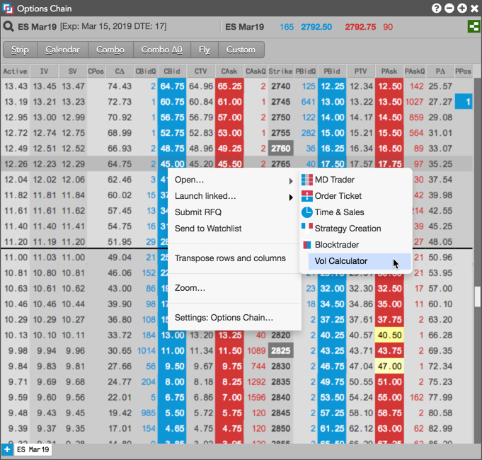
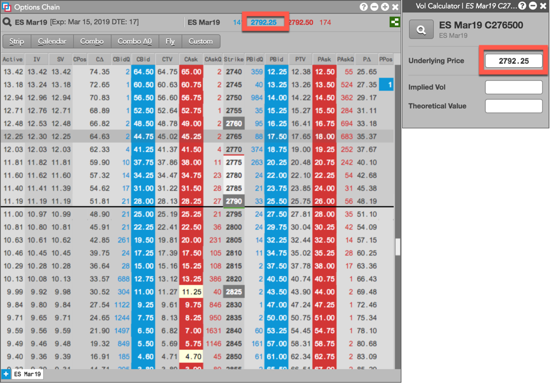
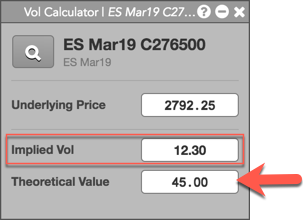
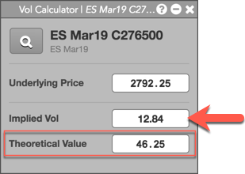

You can use the Volatility Calculator to:
Note: The futures price in the Underlying Price field is required for both calculations.
To use the Volatility Calculator:
Right-click the options instrument and select Open | Open Vol Calculator from the context menu.
For example, right-click the CBid column at the 2765 strike.

The Volatility Calculator opens seeded with the LTP of the underlying in the Underlying Price field.

Enter an option price in the Theoretical Value field.

The option instrument's implied volatility is calculated and displayed in the Implied Vol field.
Enter a value in the Implied Vol field.

The option instrument's price is calculated and displayed in the Theoretical Value field.
If needed, enter a new value in the Underlying Price field to recalculate the Implied Vol and Theoretical Value for the options instrument.
Tip: You can also click the Market Explorer in the calculator to select a different options instrument. When selected, the instrument's underlying price is displayed.